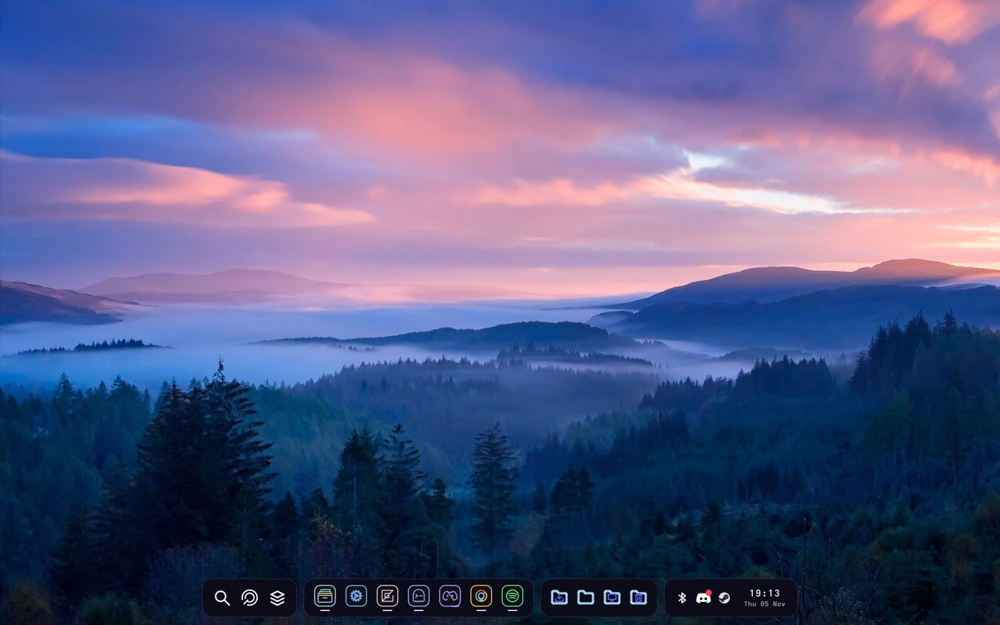
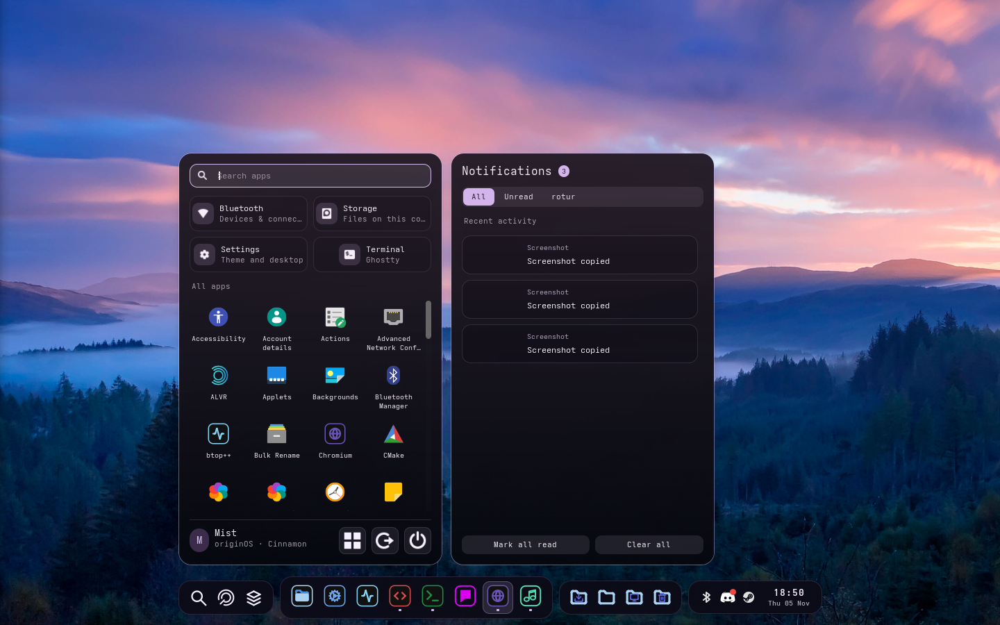
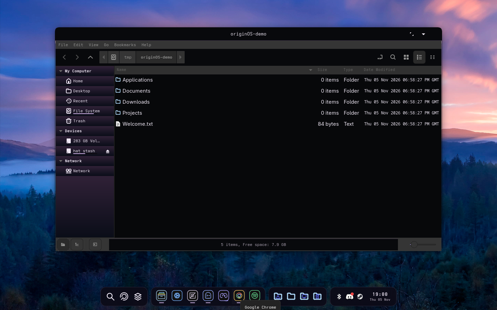
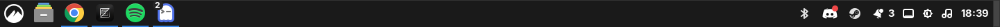

Saved work in progress. The live machine has been restored to its previous Cinnamon appearance.
These are captures from earlier prototype stages, not a completed desktop or an interactive web version.
Sources, install/restore commands and unfinished work are documented in linux/cinnamon/README.md
on the saved source branch.

Later desktop stage: floating dock groups, application-specific outline icons and thin running indicators.

Earlier launcher stage: real Linux applications and Cinnamon notifications. Icon styling was revised after this capture.

Early Nemo styling, before the experimental native layout module. This does not yet match the requested file-manager layout.

Original Cinnamon panel, which has now been restored.